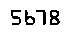

OCR (Optical Character Recognition) 是将文本资料的图像文件进行分析识别，转换机器编码文本的过程。运用OCR处理，就可以获取图像文件中的字符，从而对字符串变量进行访问和操作。
本篇博文着重介绍如何在windows操作系统中安装和配置Tesseract，之后利用tesseract 命令测试输入图像。
下篇博文介绍如何运用python 脚本调用Tesseract。
了解更多关于Tesseract 的信息，请访问项目介绍.
1. 安装Tesseract
对于windows用户，可以参考下文。
其他系统用户，参见官方文档.
由于官方不提供最新的 v3.05安装包，博主选择了由 Mannheim University 维护提供的installer.
安装默认为英文语言包，如有其他语言需要可在安装过程中，在Additional language data中选择相应语言。
安装完成之后，将其添加到path环境变量中，以便后续使用。
2. 测试Tesseract OCR
2.1 检测安装
首先验证 Tesseract 是否成功安装
$ tesseract -v
返回如下，成功安装
C:\Users\Surflyan\Desktop>tesseract -v
tesseract 3.05.01
leptonica-1.74.1
libgif 4.1.6(?) : libjpeg 8d (libjpeg-turbo 1.5.0) : libpng 1.6.20 : libtiff 4.0.6 : zlib 1.2.8 : libwebp 0.4.3 : libopenjp2 2.1.0
2.2 测试应用
在终端直接输入 tesseract 获取 tesseract 详细语法。
提供预处理过的图像，Tesseract OCR 获得准确的结果
我们使用如下图片作为测试样例：
在终端输入：
tesseract test.png stdout
Warning. Invalid resolution 0 dpi. Using 70 instead.
Testing Tesseract OCR
可以看到，准确识别。
可是这样总能得到完美的结果吗？继续测试如下图片：

C:\Users\Surflyan\Desktop>tesseract test_2.png stdout digits
Warning. Invalid resolution 0 dpi. Using 70 instead.
5513
可以发现， tesseract 识别错误。
3. 总结
可以知道，Tesseract 并不是 OCR 现成的解决方案，它适合构建图片处理管道，在经过预处理之后,再进行OCR识别。
使用Tesseract时，应该：
- 使用尽可能高分辨率和DPI的输入图像。
- 应用阈值来从背景分割文本。
- 确保前景尽可能地 从背景分割（即，没有像素或字符变形）。
- 将文本偏移校正 应用于输入图像，以确保文本正确对齐。